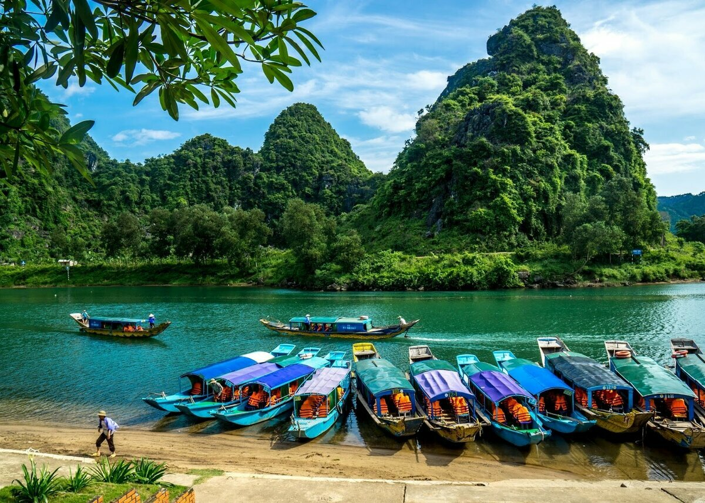

Италия
Италия не нуждается в представлении. Сюда едут за атмосферой – за тем, чтобы насладиться самыми известными достопримечательностями, посетить романтичную Венецию, попозировать в древней Пизе. Но мало кто знает, что самый правильный отдых в Италии – активный! В первую очередь, на что стоит обратит свое внимание – это на Доломитовые Альпы. Осенние треккинги или зимние покатушки? Мы пока сами не определились, что лучше, поэтому едем туда и осенью и зимой, чтобы была возможность сравнить и оценить все виды активного отдыха!
Приобрести билеты 
Вьетнам
Сейчас Вьетнам – одно из самых популярных направлений. Пляжный отдых здесь восхитителен, а активная составляющая ярка как нигде более. Именно сюда любит ездить молодежь – здесь интересно, весело, просторно и не слишком дорого.
Приобрести билетыГреция
Кто еще не был в Греции? Это направление является одним из наиболее популярных у наших туристов. Сюда едут, чтобы насладиться солнцем, морем, прекрасной погодой и отличным обслуживанием. Но пляжный отдых – это далеко не все, что может предложить Греция.
Приобрести билетыЧехия
Большинство тех, кто путешествовал по Европе, несомненно, посещал и Чехию. Прага, Карловы Вары, Брно – города, о которых рассказываешь взахлеб после возвращения. И каждый путешественник сходится во мнении, что да, в Чехии нужно обязательно побывать. А теперь представьте, что будет, если путешествовать не по заезженным местам, а там, где туристов не так много. Например, посетить Чешскую Швейцарию или даже Чешский Рай – не удивляйтесь, есть и такие!
Приобрести билеты